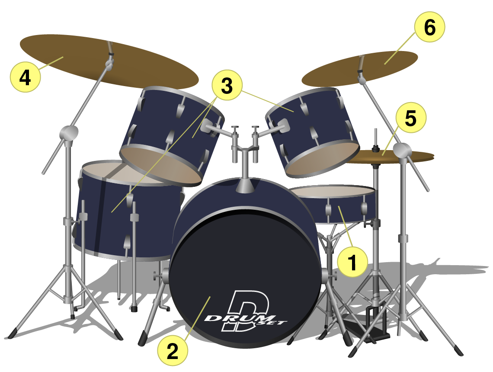
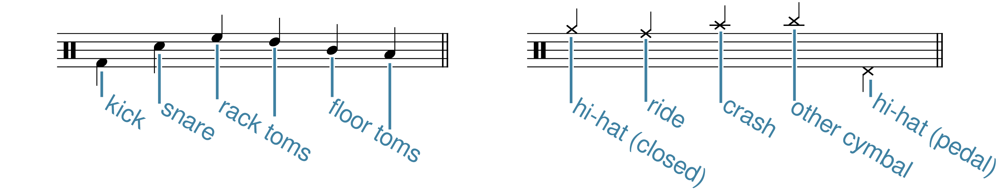
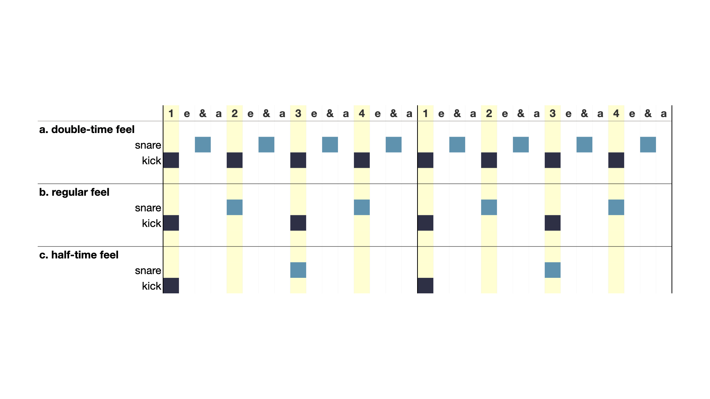

Open Music Theory：繁體中文版
鼓點
重點整理
- 多數流行音樂鼓點都有反拍重音（backbeat），也就是四拍子中第2、4拍的重音，通常由小鼓演奏。
- 大鼓常使用切分節奏。
- 踩鈸、Ride鈸與Crash鈸，常在拍、拍的分割或細分層次，演奏規律脈動。
- 除了基本搖滾鼓點，常見鼓型還包括倍速律動、半速律動、每拍大鼓（four on the floor）與dembow。
- 流行音樂以四拍子最普遍，其次常見單三拍子。單三拍子的流行鼓型，常把小鼓放在第3拍。
鼓點是饒舌、搖滾、爵士等許多流行音樂曲風的節奏基礎。它可以由鼓組實際演奏，也可以取樣既有錄音，或在音序器、數位音訊工作站（DAW）中編寫。本章會介紹鼓組本身、鼓譜記法，以及多種曲風共有的鼓點特徵，也會說明幾種特定鼓型與曲風之間的關係。
查看英文原文
Key Takeaways
- The backbeat is common to most pop drumbeats. The backbeat is an accented articulation on beats two and four in quadruple meters, usually played by the snare drum.
- The kick drum is often syncopated.
- Cymbals—hi-hats, ride, and crash—often play regular pulses at the beat, beat division, or beat subdivison level.
- Common drumbeats other than the basic rock beat include double-time, half-time, four-on-the-floor, and dembow.
- Quadruple meters are by far the most common meter in pop music; simple triple is the next most common. A simple triple drumbeat in pop music will often have a snare hit on beat three.
Drumbeats are the rhythmic cornerstone of many genres of popular music, including rap, rock, and jazz. Sometimes a drumbeat is performed on a drum kit, sometimes it’s sampled from an existing recording or programmed into a sequencer or DAW (digital audio workstation). In this primer, we’ll learn about the instrument itself, notating drum set parts, and the features of drumbeats that are common to many styles of music. We’ll also learn how a few particular drumbeats are associated with specific genres.
例1標出鼓組六類常見部件，下方逐一介紹。
{kind=link}

黃色編號對應下方表格：1小鼓、2大鼓、3通鼓、4Ride鈸、5踩鈸、6Crash／重音效果鈸。
鼓皮上的DRUM SET表示鼓組，屬插圖文字。
| 樂器 聲音示範 | 說明 | |
|---|---|---|
| 1. | 小鼓（snare drum） | 底部繃有金屬響弦，敲擊時會振動，產生沙沙的雜音成分，涵蓋很廣的可聽頻率範圍。用力敲擊可像木頭爆裂或雷響，輕奏則能呈現喀聲、點擊與帶響弦聲的滾奏等效果。 |
| 2. | 大鼓（kick drum），也稱bass drum | 鼓組中音高最低的鼓，以腳踏板操作。原本由音樂會大鼓改製，有些仍保留轟鳴聲，另一些則呈現低沉短促的撞擊，或極低頻效果；透過合適的揚聲器，身體也能感受到這些振動。 |
| 3. | 通鼓（toms／tom-toms） | 基頻比小鼓更集中、音高比大鼓高。鼓組通常有兩、三個不同音高的通鼓；明確音高在其整體音色中，可以較突出，也可以較不明顯。 |
| 4. | Ride鈸（叮叮鈸） | 大型懸掛鈸。較薄的Ride鈸常見於爵士，可以發出溫暖、綿延的一片聲響；金屬樂常用的厚鈸，則可能產生尖銳、高頻而帶顆粒感的聲音。敲擊中央隆起的鈸鐘（bell），可得到高而清亮的鈴聲。 |
| 5. | 踩鈸（hi-hat） | 由一對同尺寸鈸組成，下片反向放置，使兩片只有邊緣接觸。未踩踏板時張開，踩下後閉合。敲擊音色取決於開合程度：閉合時常發出明亮的「滴、滴、滴」，張開時則更猛烈、帶碰撞或沙響，也能呈現兩者之間的多種音色。單用腳踏板，也能做出飛濺般的聲響效果。 |
| 6. | Crash鈸（碎音鈸）與重音效果鈸 | 依尺寸、外形與演奏方式，可發出撞擊、飛濺、持續沙響，或短促強烈的聲音。直徑常見6至18英吋，厚度也不同；有些外形與其他鈸不同，有些加上鉚釘或較大的開孔。 |
譯註來源：Yamaha DTX-PRO Owner’s Manual, hi-hat foot-close and splash、Zildjian S HiHats: Foot Chicks
鼓組的組合非常有彈性：多數部件，有人甚至認為全部部件，都可以自由增減。有些鼓手會加裝牛鈴、鈴鼓、木塊，以及能觸發預設聲音的電子打擊墊。部件種類與配置方式，幾乎沒有固定上限。
並非所有流行音樂都使用原聲鼓組。鼓機、電子鼓，以及數位音訊工作站外掛，讓作曲與製作有更多自訂可能。電子打擊樂常使用原聲樂器的取樣，或模擬其音色。
查看英文原文
The Acoustic Drum Kit
Example 1 illustrates six common components of a drum kit, each of which is described further below.
| Instrument Audio |
Description | |
|---|---|---|
| 1. | Snare drum |
A drum with metal wires stretched underneath that buzz when the drum is struck. This results in a noisy sound (that is, one that fills out much of the audible frequency spectrum). Played with force, it sounds like wood cracking or like a thunderclap. Played softly, it offers a range of effects from clicks and taps to buzzing rolls. |
| 2. | Kick drum (or bass drum) |
The lowest-pitched drum in the kit, played with a foot pedal. It is originally based on a modified concert bass drum, and some still sound with the same booming quality. Other kick-drum sounds have a dull thud, or a sub-bass effect that (over the right speakers) is felt in the body as much as it is heard. |
| 3. | Toms (or tom-toms) |
Drums with a more focused pitch fundamental than the snare and are higher-pitched than the kick. There are often two or three toms on a drum kit, each with a distinct pitch. The pitch can be a more or less prominent feature of the toms’ sound. |
| 4. | Ride cymbal |
A large suspended cymbal. Depending on the thickness of the cymbal, the ride may sound like a warm wash of sound (thinner rides, common in jazz) or a sharp, high-pitched crunch (thicker rides, common in metal music). High, pure ringing sounds can be produced by playing the “bell” of the ride, located in the middle of the cymbal. |
| 5. | Hi-hat cymbals |
A pair of cymbals of the same size; the bottom cymbal is upside-down so only their edges touch. The cymbals are open by default and close when a foot pedal is pressed. When struck, the hi-hats’ timbre depends on how open or closed the two cymbals are. The hi-hat is most often struck while closed, producing a characteristic, bright “tick tick tick”; the open sound has a more aggressive crashing or rattling quality; and a wide range of intermediate timbres are also available. When played with the foot pedal only, the cymbals make a splashing effect. |
| 6. | Crash and accent cymbals |
Depending on size, contour, and playing technique, these can produce a variety of crashing, splashing, sizzling, and barking sounds. They range in size (6–18” diameters are common) and thickness. Some have shapes and contours unlike other cymbals, or are augmented with rivets or large holes. |
The drum kit is uniquely modular—that is, most (some might say all) of its constituent parts are optional. Other auxiliary percussion add-ons found on some drum kits include cowbells, tambourines, wood blocks, and electronic pads that can trigger programmed sounds. The sheer variety of drum kit elements and their various configurations is near-limitless.
Not all pop music uses an acoustic drum kit for its percussion. Drum machines, electronic drum sets, and plug-ins for digital audio workstations allow further customization for music composition and production. Most of the sounds used in electronic percussion are samples or imitations of acoustic instruments.
很多鼓點從創作、演奏到錄音，都沒有寫成樂譜。不過，鼓手、編曲者與其他音樂工作者，也經常用五線譜溝通細節。鼓組配置與演奏具有即興性，因此記法尚未完全標準化；下列慣例是本書採用、也相當常見的一套方法。只要可能產生歧義，就應加上說明或鼓譜圖例。
例2說明如何用譜上的線與間，表示鼓組不同部件：
{kind=link}

- kick＝大鼓；
- snare＝小鼓；
- rack toms＝掛通鼓；
- floor toms＝落地通鼓；
- hi-hat (closed)＝閉合踩鈸；
- ride＝Ride鈸；
- crash＝Crash鈸；
- other cymbal＝其他鈸；
- hi-hat (pedal)＝腳踏板踩鈸。
- 圖中大鼓、小鼓符桿朝下，通鼓及上方鈸類朝上，腳踩踩鈸朝下；
- 後文說明其他合理符桿安排。
- 鈸類通常維持規律脈動，符桿朝上。
- 大鼓與小鼓常一起構成鼓型的主要特徵，符桿朝下。
例3。標準搖滾鼓點：大鼓在第1、3拍，小鼓反拍重音在第2、4拍，踩鈸維持均勻八分音符。
這些原則也有合理例外。例如，腳踩踩鈸的符桿可朝上，表示它與其他鈸類配合，也可朝下，表示它與大鼓一起由雙腳協調。鼓花（fill）也常不遵循兩聲部原則，因為規律鈸聲可能暫停，讓鼓手用雙手演奏小鼓、通鼓等。
查看英文原文
Five-Line Staff Notation for Drum Kit
Many drumbeats are created, performed, and recorded without ever being written down. But drummers, arrangers, and other music-industry professionals often use a five-line staff to communicate the details of a drumbeat. Drum kit notation is not fully standardized due to the improvisatory and modular nature of its performance practice, but the conventions given below and used throughout this textbook represent a particularly common method. Best practice is always to include explanatory notes and/or a drum key whenever the notation could be at all ambiguous.
Example 2 shows how each line and space of the staff denotes a different part of the drum kit:
- Clef: as a percussion instrument, the drums take a percussion clef.
- Notehead type: standard oval noteheads are used for drums (snare, kick, tom, etc.), while cross (x) noteheads are used for cymbals.
- Placement:
- The kick drum uses the bottom-most space on the staff.
- The snare takes the third space from the bottom.
- The toms are shown on the other lines and spaces in the staff.
- Hi-hats occupy the space above the staff.
- The ride takes the uppermost line.
- Other crash and accent cymbals use ledger lines above the staff.
- When the hi-hat is played with the foot pedal, rather than with drumsticks, this is notated in the space just below the staff.
- Unusual instruments: Other elements and effects may not have a standard representation, and should be labeled to avoid confusion.
When notating a drum part, separate things into two voices, as in Example 3:
- The cymbals, which usually keep a steady pulse; notated with upstems.
- The kick and snare drum, which often cooperate to articulate the characteristic features of a drumbeat; notated with downstems.
Example 3. The standard rock beat with kick on beats one and three, a snare backbeat on two and four, and regular eighth notes in the hi-hat.
Exceptions to these rules can often be justified. For example, when the hi-hat is played with the foot pedal, it may be stemmed either direction: up to show coordination with other cymbal articulations, or down to show coordination between the feet (that is, with the kick drum). Notated drum fills are another place where this two-voice rule may be broken, because a regular cymbal pulse will often stop so that the drummer can use both hands to play snare, toms, etc.
多數流行歌曲採單四拍子，採譜時通常記為[latex]\mathbf{^4_4}[/latex]；多數這類鼓型都有反拍重音，也就是通常由小鼓演奏的第2、4拍。上方例3中，小鼓反拍是基本搖滾鼓點的一層：它與第1、3拍的大鼓交替，上方踩鈸維持八分音符。嘻哈黃金年代常見的boom-bap鼓型，也以這種大鼓、小鼓交替為基礎。
在許多曲風中，小鼓反拍是三層節奏裡最穩定的一層。下文會說明如何改變大鼓與鈸類節奏，保留熟悉的反拍，同時改變律動性格。作曲者與製作人也常用兩種方式改造反拍：
- 把反拍節奏交給小鼓以外的聲音。
- 加快或放慢反拍節奏，使它與整體律動速度的關係改變。
以下分別說明。
查看英文原文
The Snare Drum and the Backbeat
Most popular songs are in a simple quadruple meter (usually notated by transcribers as [latex]\mathbf{^4_4}[/latex]), and most popular music drumbeats in this meter have a backbeat. The backbeat refers to beats two and four, usually played by the snare drum. Example 3 above shows how a snare-drum backbeat is one layer of the basic rock beat: kick-drum hits on beats one and three alternate with the snare backbeat, complemented by a regular eighth-note pulse in the hi-hat. The same alternation of kick and snare hits underpins the “boom-bap” beat found in much golden-age hip hop.
In many genres the snare backbeat is the most stable of the three layers. Below, we’ll see how the kick and cymbal layers can be manipulated to change the character of a groove, without sacrificing the familiarity of the backbeat. Two common ways that songwriters and producers modify the backbeat are:
- Giving the backbeat rhythm to instruments other than the snare drum
- Speeding up or slowing down the backbeat rhythm enough to alter its relationship to the tempo of a groove.
Each technique is discussed further below.
反拍不一定要用小鼓。皇后合唱團〈We Will Rock You〉（例4）用跺腳與拍手，代替鼓組，構成基本搖滾鼓點。嘻哈與電子音樂，也常以拍手或彈指取代小鼓。多種反拍聲音還能疊在一起，創造不同音色，例如下方例8與例9。
例4。皇后合唱團〈We Will Rock You〉（1977）中，不用鼓組演奏的反拍。
在搖擺、咆勃等爵士曲風中，鼓手可能踩踏板讓踩鈸閉合，演奏反拍；詳見〈搖擺節奏〉。這通常會產生短促、清脆的打擊聲，音色與小鼓有不少相似之處。踩鈸反拍是小鼓反拍的先驅。Ella Fitzgerald〈Fascinating Rhythm〉的例5，在第2、4拍使用踩鈸反拍，另有一次提早八分音符的起奏。注意，這裡小鼓採切分節奏，踩鈸卻更規律。
例5。Ella Fitzgerald〈Fascinating Rhythm〉錄音（1959）中，典型的踩鈸爵士反拍。
查看英文原文
Non-Snare Backbeats
The snare isn’t the only instrument that can play the backbeat. In Queen’s “We Will Rock You” (Example 4), the basic rock beat is made with stomping feet and clapping hands instead of drums. In hip hop and electronic music, it’s common to replace snare hits with hand claps or finger snaps. Multiple backbeat sounds can also be layered together to create a variety of backbeat timbres (as in Examples 8 and 9 below).
Example 4. A backbeat without drums in Queen’s “We Will Rock You” (1977).
In many jazz subgenres, including swing and bop, the drummer might play a backbeat on the hi-hats by closing the two cymbals together with a foot pedal (see Swing Rhythms for more information). The result is usually a short, sharp, percussive sound, similar in many ways to the timbre of the snare drum. This hi-hat backbeat was the precursor to the snare backbeat. Example 5, from Ella Fitzgerald’s rendition of “Fascinating Rhythm,” shows a hi-hat backbeat on beats two and four (and one eighth-note anticipation). Notice how the snare in this example plays a syncopated rhythm, whereas the hi-hat is much more regular.
Example 5. A typical jazz backbeat on the hi-hats in Ella Fitzgerald’s recording of “Fascinating Rhythm” (1959).
當速度介於80至160bpm時，基本搖滾鼓點中大鼓與小鼓交替的節奏，通常容易被感知為拍，或基本拍感（tactus）。這稱為常規律動（normal feel）：鼓型與速度一起建立清楚、容易隨之舞動的律動。有時，相同的大鼓、小鼓交替，會暗示超過160或低於80 bpm的速度；如果整體音樂也明顯很快或很慢，鼓型仍可支撐那個速度。但有時，即使反拍異常快或慢，其他聲部仍讓人感到80至160 bpm的基本拍；這時便用倍速與半速，描述鼓型與其他聲部之間的關係（例6）。
{kind=link}

- a. double-time feel＝倍速律動；
- b. regular feel＝常規律動；
- c. half-time feel＝半速律動；
- snare＝小鼓；
- kick＝大鼓。
- 上方1 e & a、2 e & a、3 e & a、4 e & a，是每拍的四個十六分音符位置；
- 兩小節的黃色1、2、3、4維持同一基本拍。
- 倍速每拍有大鼓，&位置有小鼓；
- 常規大鼓在1、3，小鼓在2、4；
- 半速每小節大鼓在1、小鼓在3。
Metallica〈Trapped Under Ice〉的主要律動採倍速鼓型（例7）。若把小鼓反拍按一般鼓型理解，會對應約320 bpm；這樣數「1、2、3、4」已不舒服，更別說跟著動身體。甩頭的聽眾更可能抓住一半速度、約160 bpm的基本拍感。異常快速的鼓型，與較慢但仍很快的基本拍之間，產生急促、強烈的推進力。到了2:00，鼓型改成常規律動。
Phil Collins〈Take Me Home〉的速度為119 bpm，位於容易感知為基本拍的範圍中。慢速反拍若按常規鼓型理解，卻只暗示約60 bpm，對多數聽者而言太慢（例8）。若仍以119 bpm打拍，就會聽成半速鼓型。取代小鼓的拍手聲，步調緩慢；十六分音符踩鈸、切分通鼓與木塊，加上同樣快速的合成器固定音型，彼此形成張力，使律動帶有斷裂感，同時放鬆又焦躁。
查看英文原文
Half- and Double-Time Feels
When the tempo is 80–160 bpm, the rhythm of the kick and snare in a basic rock beat will likely be understood as the beat or tactus. Such drumbeats can be said to have a normal feel, in which the drums and tempo work together to establish a clear groove that would be easy to dance to. Sometimes grooves use the same alternation of kick and snare to suggest a tempo above 160 bpm or slower than 80 bpm. These fast and slow drumbeats might still support the tempo for a groove, if that tempo is also felt as notably fast or slow. Other times, however, the rest of the groove still suggests a tactus of 80–160 bpm despite the unusually fast or slow backbeat. In such cases, we use the terms double-time and half-time to describe the misalignment of the drums with the rest of the groove (Example 6).
The main groove of Metallica’s “Trapped Under Ice” has a double-time feel (see Example 7). The snare suggests a backbeat alternating at a tempo of about 320 bpm—a pace at which it’s uncomfortable to count “1 2 3 4,” let alone move your body. Headbanging fans are more likely to lock into a tactus half the speed of the backbeat (160 bpm). The disagreement between the unusually fast drums and the slower (but still fast!) tactus gives this song a frantic, driving energy. Later in the song (2:00), the drums shift to a normal feel.
Example 7. A double-time backbeat in Metallica’s “Trapped Under Ice” (1984).
Phil Collins’s “Take Me Home” has a tempo of 119 bpm, right in the middle of the preferred tempo range for a tactus. The song’s slow backbeat would suggest a tempo of only 60 bpm—too slow for most listeners (see Example 8). If we instead keep time at the 119-bpm pulse, we hear a half-time drumbeat. The tension between the slow pacing of the backbeat (with a clap substituting for snare), the skittering sixteenth-note hi-hats, and the syncopated toms and woodblock, supported by a similarly fast synth ostinato, gives this groove a fractured feeling, at once relaxed and anxious.
Example 8. A half-time backbeat in Phil Collins's "Take Me Home" (1985).
小鼓不一定演奏反拍，其中一種特別常見的其他節奏是dembow。這個詞既指曲風，也指常見於該曲風、雷鬼動（reggaeton）、舞廳雷鬼（dancehall）等音樂的節奏型。最簡單的dembow，每一拍都打大鼓，小鼓則演奏tresillo（3+3+2）的後兩組起點。Bad Bunny〈LA CANCIÓN〉副歌就是一例（例9，0:52）。
例9。Bad Bunny〈LA CANCIÓN〉（2019）中的dembow鼓型。
查看英文原文
Dembow
The snare drum doesn’t always play the backbeat, and one non-backbeat snare pattern is particularly noteworthy. Dembow refers to both a genre of music and a rhythmic pattern common in that genre and in others (e.g., reggaeton, dancehall). In its simplest form, the dembow drumbeat has a kick drum on all four beats and snare drum playing the last two parts of a tresillo (3+3+2) rhythm. The chorus of Bad Bunny's "LA CANCIÓN" is one example (see Example 9, 0:52).
Example 9. A dembow pattern in Bad Bunny's "LA CANCIÓN" (2019).
小鼓反拍是四拍子律動中最常見的特徵，大鼓型態則更自由。前文提到，第1、3拍打大鼓，是基本搖滾鼓點的一部分。另一種常見方式稱為four on the floor（每拍大鼓）：每個四分音符都打大鼓，通常搭配小鼓反拍，如Blondie〈Heart of Glass〉（例10），也可以完全不用小鼓。
例10。Blondie〈Heart of Glass〉（1978）中的每拍大鼓加反拍鼓型。
例11。Kendrick Lamar〈HUMBLE.〉（2017）中的大鼓切分。部分踩鈸上方的o，表示用踏板稍微打開踩鈸；小鼓位置的x，表示拍手聲。
查看英文原文
The Kick Drum
Whereas the snare-drum backbeat is the most common feature of a quadruple meter groove, the kick drum pattern is more flexible. As we’ve seen, kick drum played on beats one and three is a common option, forming part of the basic rock beat. Another common pattern is called four on the floor: the kick drum plays every quarter note, usually alongside a snare-drum backbeat, as in Blondie’s “Heart of Glass” (Example 10), or with no snare at all.
Example 10. A four-to-the-floor + backbeat pattern in Blondie’s “Heart of Glass” (1978).
Syncopation is more common in the bass drum than in the snare of pop drumbeats. Example 11 shows the drumbeat of Kendrick Lamar’s “HUMBLE.”, which has a consistent backbeat provided by the hand claps, but plenty of straight syncopation in the kick drum. Note that the kick still enters reliably on the downbeat of each measure, despite syncopation elsewhere.
Example 11. Kick drum syncopation in Kendrick Lamar’s “HUMBLE.” (2017). The “o” over some hi-hats indicates the cymbals are opened slightly with the foot pedal. The “x” in the snare space indicates claps.
相對小鼓反拍，鈸類也可以採不同節奏。最常見的是均勻八分音符或十六分音符，規律四分音符也不罕見。還有其他方式，例如〈Heart of Glass〉中的踩鈸，主要只在非拍點出現（上方例10）。很多曲風最常用踩鈸維持脈動，Ride鈸也常見；Crash鈸則較常用於密度較疏的脈動，或聲響更猛烈的律動與曲風。
接下來兩例呈現鈸類節奏的不同選擇。肖戰〈光點（Made to Love）〉[1]使用均勻的十六分音符踩鈸（例12）；還能聽到短促、俐落的非小鼓取樣演奏反拍，以及約0:10開始的切分大鼓。另一例是Dream Theater〈As I Am〉（例13）：0:55的第一種鼓型採半速反拍，中國鈸（china cymbal）奏四分音符，Crash鈸標出小節第一拍。1:14的下一種律動稍微加快，改成常規律動，Crash鈸奏八分音符。
例12。肖戰〈光點（Made to Love）〉（2020）中的十六分音符踩鈸。
例13。Dream Theater〈As I Am〉（2003，0:55）中，使用中國鈸與Crash鈸兩種重音鈸的鼓型。
查看英文原文
Cymbals
The cymbals also can have varying rhythms in relation to the snare backbeat. The most common rhythmic options are consistent eighth notes or sixteenth notes, though steady quarter notes are by no means rare. Other patterns are also possible, like in “Heart of Glass” where the hi-hats mostly play only the off-beats (see Example 10 above). The hi-hats are the most common cymbal used to keep this pulse in many genres; the ride cymbal is also common; the crash cymbal is an option used most often for slower-paced pulses and/or in more aggressive sounding grooves and genres.
The next two examples show the range of options for cymbals in drumbeats. The first is from Xiao Zhan’s “Made to Love,”[1] with a consistent sixteenth-note pulse in the hi-hats (Example 12; you can also hear a snappy non-snare sample for the backbeat and, starting around 0:10, a syncopated kick drum). The second example is from Dream Theater’s “As I Am” (see Example 13). The song’s first drumbeat (at 0:55) is a half-time backbeat with quarter notes on the china cymbal and downbeats marked by the crash cymbal. The next groove (1:14) speeds up a little and shifts to a normal feel with the crash playing eighth notes.
Example 12. Sixteenth-note hi-hats in Xiao Zhan’s “Made to Love” (2020).
Example 13. Two drumbeats using accent cymbals (china and crash) in Dream Theater’s “As I Am” (2003; 0:55).
複四拍子的基本搖滾鼓點，只需配合每拍三分的方式調整：大鼓仍在第1、3拍，小鼓仍在第2、4拍演奏反拍，鈸或其他樂器則奏拍的分割單位。Harold Melvin & the Blue Notes〈If You Don’t Know Me by Now〉的鼓型，就是由這三層組成（例14）。[2]
在單三拍子中，無法於每小節內，以等長間隔反覆交替大鼓與小鼓。常見做法是把小鼓「反拍」延到每小節第3拍；Paramore〈That’s What You Get〉就是如此（例15）。前奏的小鼓先在「3 e + a」做熱鬧的鼓花，之後進入下方採譜的律動。大鼓的tresillo，讓延後小鼓擊點的節奏仍富變化。歌曲第二段主歌（原文標0:27）也值得注意：鼓改用像四拍子的基本搖滾鼓點，其他樂器卻仍維持原來的三拍子。
試試看
用這份測驗檢查對本章的理解。
- Brennan, Matthew、Joseph Michael Pignato與Daniel Akira Stadnicki編。2021。The Cambridge Companion to the Drum Kit（《劍橋鼓組指南》）。劍橋：Cambridge University Press。
- de Clercq, Trevor。2020。〈Rhythmic Influence in the Rock Revolution〉（〈搖滾革命中的節奏影響〉）。收於Russell Hartenberger與Ryan McClelland編，The Cambridge Companion to Rhythm，182–195頁。劍橋：Cambridge University Press。
- Geary, David。2019。〈Analyzing Drums and Other Beats in Twenty-First Century Popular Music〉（〈分析二十一世紀流行音樂的鼓與其他節奏〉）。印第安納大學博士論文。
- Ohriner, Mitchell。2020。〈Rhythm in Contemporary Rap Music〉（〈當代饒舌音樂的節奏〉）。收於Russell Hartenberger與Ryan McClelland編，The Cambridge Companion to Rhythm，196–213頁。劍橋：Cambridge University Press。
媒體出處與授權
- 〈鼓組圖〉© Pbrks，Megan Lavengood改編，原章標示CC BY-NC-SA（姓名標示－非商業性－相同方式分享）授權。
- 〈鼓譜圖例〉© Megan Lavengood，採CC BY-NC-SA（姓名標示－非商業性－相同方式分享）授權。
- 〈律動對照圖〉© Megan Lavengood，採CC BY-NC-SA（姓名標示－非商業性－相同方式分享）授權。
查看英文原文
Compound Quadruple and Simple Triple Drumbeats
Most pop music is in simple quadruple meter, but the next most common meters in most popular music genres are compound quadruple and simple triple.
In compound quadruple time, the basic rock beat is simply adjusted for the new three-part beat division: the kick drum still plays on one and three, the snare still plays the backbeat on two and four, and cymbals (or some other instrument) still articulates the beat division. These three elements make up the drumbeat in “If You Don’t Know Me by Now,” by Harold Melvin & the Blue Notes (see Example 14).[2]
Example 14. A slow compound quadruple drumbeat in Harold Melvin & the Blue Notes’s “If You Don’t Know me By Now” (1972).
In simple triple time, it isn’t possible to alternate kick and snare hits of equal length in each measure. The most common approach is to delay the snare “backbeat” until the third beat of every measure; this is what happens in Paramore’s “That’s What You Get” (see Example 15). After an intro with exuberant “3 e + a” fills on the snare, the drums settle into the groove transcribed below. The tresillo kick-drum rhythm keeps things interesting while delaying the snare hit. The second verse of this song (0:27) is also notable: the drums shift to a basic rock beat (as if in quadruple meter) while the rest of the band keeps playing in the triple meter established up to this point.
Example 15. A 3/4 drumbeat in Paramore’s “That’s What You Get” (2007).
Try it!
Use this quiz to check your comprehension of the chapter.
- Brennan, Matthew, Joseph Michael Pignato, and Daniel Akira Stadnicki, editors. 2021. The Cambridge Companion to the Drum Kit. Cambridge: Cambridge University Press.
- de Clercq, Trevor. 2020. “Rhythmic Influence in the Rock Revolution.” In The Cambridge Companion to Rhythm 182–95, edited by Russell Hartenberger and Ryan McClelland. Cambridge: Cambridge University Press.
- Geary, David. 2019. “Analyzing Drums and Other Beats in Twenty-First Century Popular Music.” Ph.D. diss., Indiana University.
- Ohriner, Mitchell. 2020. “Rhythm in Contemporary Rap Music.” In The Cambridge Companion to Rhythm 196–213, edited by Russell Hartenberger and Ryan McClelland. Cambridge: Cambridge University Press.
- Drumbeats (.pdf, .mscz). Asks students to identify features of drumbeats and transcribe them. Worksheet playlist
Media Attributions
- drum_set © Pbrks adapted by Megan Lavengood is licensed under a CC BY-NC-SA (Attribution NonCommercial ShareAlike) license
- Drum key © Megan Lavengood is licensed under a CC BY-NC-SA (Attribution NonCommercial ShareAlike) license
- Feel chart © Megan Lavengood is licensed under a CC BY-NC-SA (Attribution NonCommercial ShareAlike) license